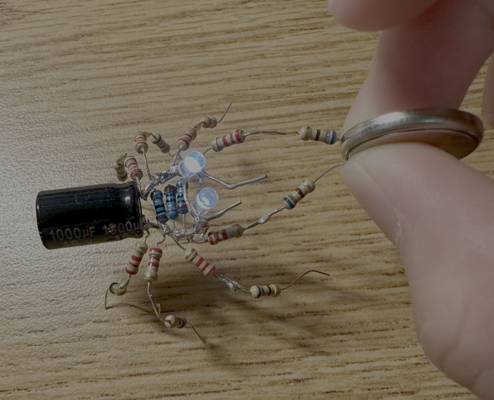

Spider Circuit
Turning circuitry into insect art.

Background/Origin
I wanted to make a unique Christmas gift for my family and friends, so I designed an electronics circuit and transformed it into a piece of art. The result was a “spider” circuit constructed from resistors and capacitors, where the eyes continued to glow even after the battery was removed due to the capacitor’s gradual discharge.

Engineering the Circuit
To build this circuit, I used a total of 19 resistors, 15 of which served primarily as decorative elements and also dissipated charge and heat. When a 3V battery touches the spider’s front legs, the circuit is completed and a voltage difference is applied across the terminals, driving current through the resistors and capacitor. After a few seconds, the LED gradually increases in brightness, and even after the battery is removed, the LED remains lit as the capacitor slowly discharges. I used the following components:
- 1000 micro-farad Capacitor
- 3V Panasonic Battery/li>
- Assorted Resistors
Final Notes / Next Steps
In the future, I aim to create more sophisticated circuits that model more complex organisms. As a simple extension, I modified the spider into a dragonfly by removing a few legs and adding wings. I encourage others to try making their own circuit-art, it’s a fun and creative way to blend engineering with art!